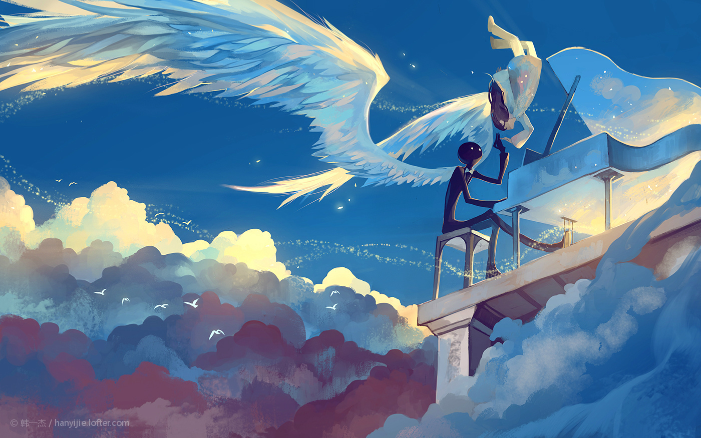

Deemo
想来想去，起了这么一个无病呻吟的标题。以此来纪念那些年我喜欢过的游戏、小说和图片。
翻壁纸的时候又翻到了deemo,这个游戏2013年上架，更新了几次。兜兜转转，几年后也打通关了。
（作者韩一杰，侵删）
从单纯地认为只是一个音乐游戏，到后来被背景故事所打动。
是不是每个人心里都有这样一个地方，想沉浸在里面，不愿意醒来？
游戏的音乐和cg各种暗示明示，还原一条完整的故事线。小黑沉默地想送小女孩回家，面具女的阻止，小女孩不停地探索。最后当然是免不了的分别。
在这里强推Atlantis Love和Fluquor (instrumental)。一种忧伤夹杂着喜悦的感觉。

（作者韩一杰，侵删）
也喜欢Sanctity的争锋相对，记得封面就是国际象棋盘上皇后和国王的对决来着。
这里尤其要提到DJ Okawari的一系列音乐，当然这和deemo已经没什么关系了。。。
第一次听见Flowers dance的时候，我在宿舍，楼下街舞社在放歌。隔了5层楼吧，也不知道怎么就听的那么清，一下子就被他的高潮部分吸引住了。
悲伤的是，我并不知道这首歌叫什么名字。当天晚上翻了一堆b站视频，最后在一个秒速5厘米的视频里面找到了这首歌。从此沉迷纯音乐不能自拔。
同是这一段时间里还有一首纯音乐故宫的回忆，时常会听着这首歌想象故宫的场景。（说起这首歌……还是从我哥的手机里搜到的，这家伙吓我说，故宫里会发生灵异的事情。嗯……并没有被吓到。）巧的是不久以后看到了三叔的《北京之梦》，从此这首歌就带上了一点灵异之感……
说回deemo,让我影响深刻的就是打歌几乎打到手指抽筋，尤其喜欢VK的专辑，难度还都挺高，像雪舞、纯白、花水月和纸飞机……（甚至8倍速）
还有一款很喜欢的音游叫做Lanota，主要是沉迷他的剧情，浪漫的古老传说。
# 混迹涂鸦王国、LOFTER的那些年
个人很喜欢涂鸦王国上面的插画风格，比如韩一杰：
（作者韩一杰，侵删）
当然别的也很喜欢，这些奇奇妙妙的插画总能满足我的一部分幻想。
LOFTER的话，话不多说，贴图：
（作者眠狼，侵删）
上图的来源要谈到《天官赐福》，总的来说，不是一本让人很愉快的小说，毕竟把生活过度夸张了吧……（最后说到没有绝对的好人，也没有绝对的坏人）其实又多少人能做到身在无间，心在桃园？
# 我又要兜回到音乐了
上面说过了吧，我有一段时间沉迷纯音乐，这里还有一首非常、非常触动我的一首歌：夏恋。
要说我听出了什么嘛……花火大会？
一开始觉得这首歌是喜悦的，后来又觉得是悲伤的。
不管了，反正很好听就对了。
还有一首关于烟花的歌叫打上花火，来自电影《升起的烟花，从下面看？还是从侧面看？》（其实就是花火咯……）
不得不说烟花升起的时候是个谈恋爱的好时候。
电影《你的名字》里面最火的是前前前世，なんでもないや( 没什么大不了的)反而不是很火
> 再靠近一点点就好 还差一点点就好 再靠近一点点就好了
今年九月听到二笙和囧菌唱的的世末歌者，歌词还是写的很好的
我仍然在无人问津的阴雨霉湿之地
和着雨音 唱着没有听众的歌曲
也有讲故事的歌：
《如旧》
涟漪描过青石小路
玉桥流水各自一处
来时软红吹满老树
去时点滴阶前碾成枯
《白石溪》
而你美胜 山水万筹 尽入一人眸
当然也有愤世嫉俗：
《笨鸟先飞》
我想无非 是你入戏太深了
青红皂白不是什么象征是非的颜色
我想无非 是信息量太大了
太多的正邪善恶模棱两可
我想无非 是人居心太叵测
相信的后果总是教训来得深刻
我想无非 是规则欺人太甚了
关于b站
最近看到知乎上说b站开始收费失了本心，但是这破站吧，还是给了我很多快乐的。
一开始在b站听歌看PV，后来看看游戏直播。
第一次追更新，追的是岚少的《夜回》，这游戏怎么说，有点治愈了啊喂。
后来追过一段时间第五人格的直播，然后开学了……
有一段时间从b站入了阴阳师的坑，因为太肝退坑了。